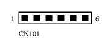

The power supply subassembly converts the 110 or 230 volt mains current to
three DC voltages: 3.3V, 5V and 12V.
The power supply subassembly converts the 110 or 230 volt mains current to
three DC voltages: 3.3V, 5V and 12V.
In case you need to replace the PSU or connect custom hardware requiring power (such as extra fans), here is the pinout of the connector:

|
Last modified: Tue May 9 01:31:46 MEST 2000